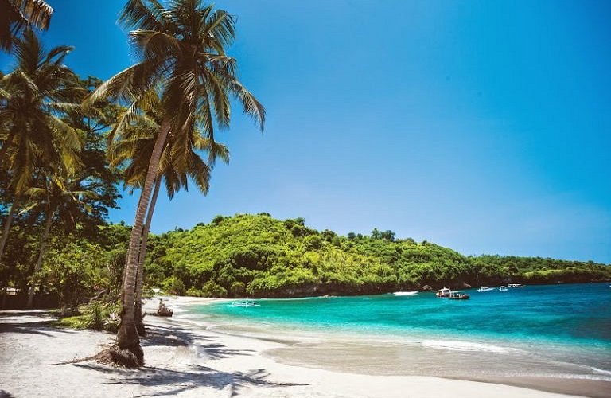
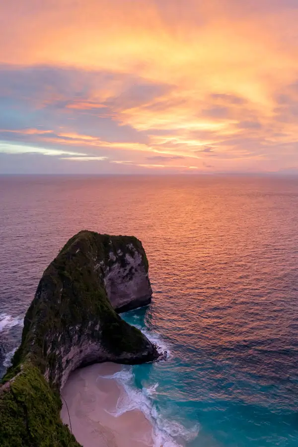
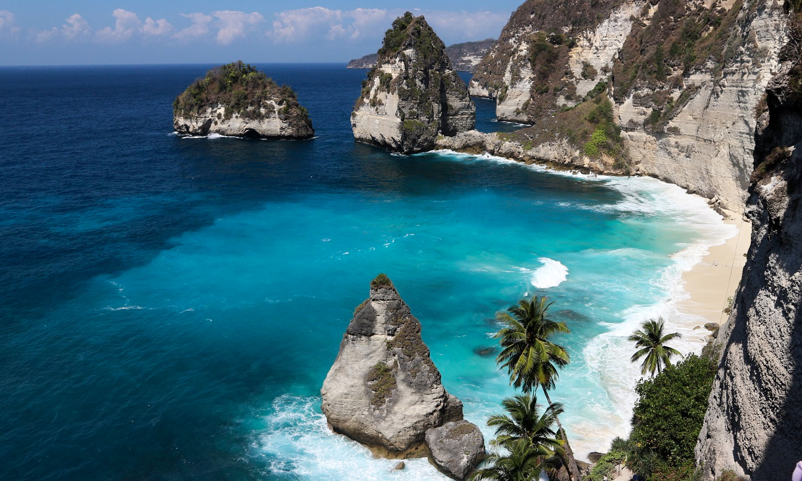
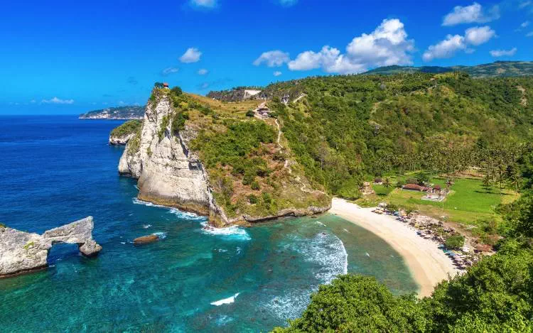
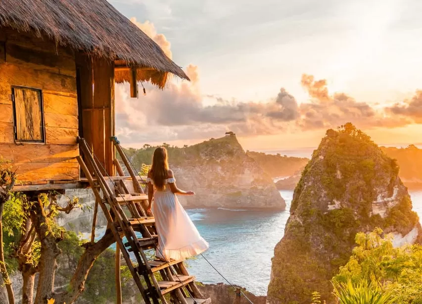
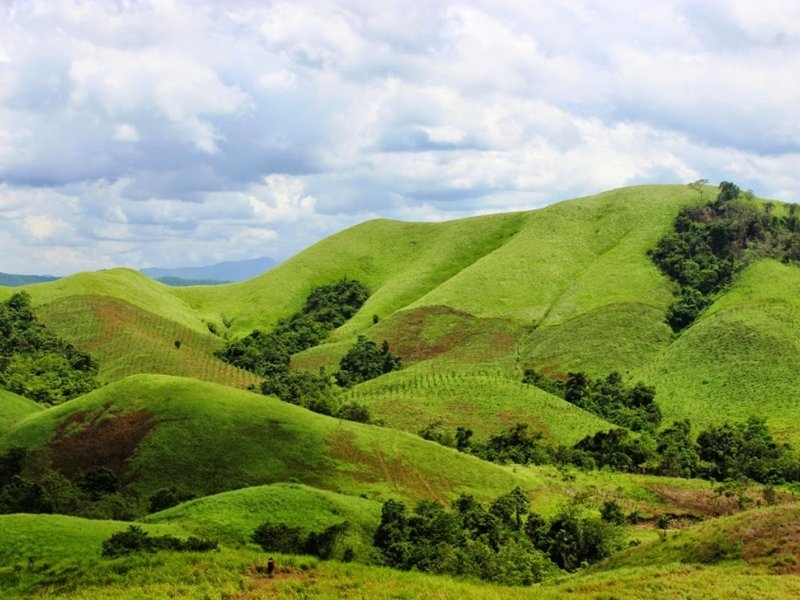
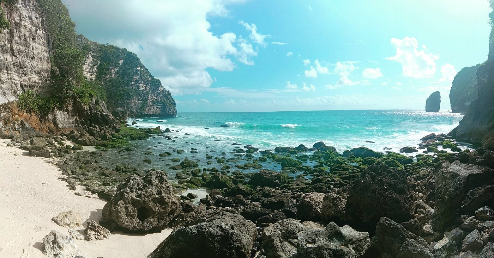

Nusa Penida
Experience the natural beauty and peaceful charm of Nusa Penida, a tropical escape beyond imagination.
Crystal Bay
The first tourist spot in Nusa Penida you must visit is Crystal Bay. This beach is famous for its crystal-clear water, perfect for snorkeling enthusiasts. Furthermore, the sunsets at Crystal Bay are also unparalleled. You can enjoy the epic sunset view while relaxing on the white sand. If you're into Instagram-worthy photo spots, Crystal Bay has coconut trees and stunning coral formations that make for a great backdrop. So, don't forget to add Crystal Bay to your list of destinations!
Kelingking Beach
Who doesn't know Kelingking Beach? This tourist spot is famous for its cliffs shaped like a T-Rex dinosaur. From the top, you can enjoy views of the blue sea and fine white sand. But, for those of you who like adventure, you can descend to the beach via a fairly extreme trekking route. Although tiring, it's well worth it, as the beach is quiet and pristine.
Angel Billabong Nusa Penida

Angel Billabong's main attraction is a natural pool formed by seawater trapped in the coral reef. This Nusa Penida tourist spot offers a truly unique swimming experience. Here, you can soak and swim in the crystal clear water. However, be careful of sudden, large waves.
Diamond Beach
Next up is Diamond Beach, a tourist attraction in Nusa Penida, known for its towering cliffs with fine white sand and diamond-shaped cliffs. To reach the beach, you'll have to descend a steep staircase. Here, you can swim, take photos, or simply relax and enjoy the natural beauty.
Atuh Beach
Another must-see tourist attraction in Nusa Penida is Atuh Beach. Located in the same area as Diamond Beach, this beach is renowned for its unique coral formations and crystal-clear ocean views. You'll also need to trek to reach Atuh Beach. Once there, you can swim or simply sunbathe while enjoying the beautiful scenery.
Molenteng Tree House
This Instagrammable spot is a must-visit for those of you with FOMO. From here, you can enjoy a breathtaking view of Raja Lima with its vast expanse of ocean. This treehouse is perched on a cliff, offering a breathtaking view from above. This Nusa Penida tourist spot is also a popular spot for pre-wedding photos and other aesthetic photos for social media. So, if you're looking for a stunning photo with a natural backdrop, the Treehouse is the perfect spot.
Teletubbies Hill, Nusa Penida
This tourist spot features a vast expanse of green, hilly grasslands, reminiscent of the setting of the TV show Teletubbies. You can take a leisurely stroll here while enjoying the fresh air. This spot is also very aesthetically pleasing, especially during the green season. So, if you're looking for something other than the beach and ocean, a trip to Teletubbies Hill is the perfect choice.
Tembeling Beach
This tourist spot offers the experience of swimming in a natural pool hidden within the forest. Furthermore, Tembeling Beach is perfect for those who prefer quiet and peaceful settings.